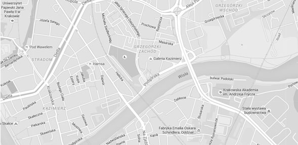

Contacts

Galeria Kazimierz is a large shopping center located in the Grzegórzki borough of Kraków. The name derives from the neighbouring district of Kazimierz.
Address: Podgórska 34, 33-332 Kraków, Poland
Home